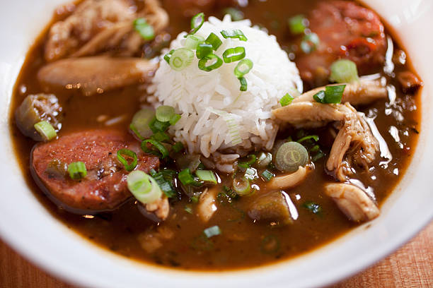

Chicken and Andouille Sausage Creole Gumbo
Description
This recipe is derived from a combination of recipes I've tried over several years and results in the absolute best Gumbo I've ever eaten.
Ingredients
- 6 cups Water (or enough to cover the chicken in a large pot)
- 2 lbs cut up bone-in chicken
- 2 lbs Andouille Sausage, cut into rounds
- 1-2 lbs okra cut into rounds
- 3/4 cup plus 2 tbsp vegetable or olive oil
- 3/4 cup all purpose flour
- 6 green onions, chopped
- 6 cloves garlic, chopped
- 5 stalks celery, chopped
- 1 large green bell pepper, chopped
- 2 tablespoons Creole seasoning, such as Tony Chachere’s Original Creole Seasoning or Emeril's Essence
- 4 bay leaves
- 1/4 tsp dried thyme
- Dash of hot sauce
- Pinch of cayenne
- 1 tablespoon Worcestershire sauce
- 4 tablespoons filé powder
- Salt and pepper to taste
- 6 cups steamed white rice
Steps
- In a medium-sized pot, add chicken and cover with water. Bring water to a boil, then simmer until fully cooked about 20 to 25 minutes.
- Remove cooked chicken from the pot, allow it to cool then shred into small pieces. Cover and set aside. Reserve water/stock.
- Cook the sausages in a skillet in batches over medium heat, turning occasionally, until the pieces are slightly brown and much of the fat has been rendered. Remove the sausage and set aside on a paper towel-lined plate to drain. Discard the excess fat remaining in the skillet before cooking the next batch of sausage.
- Once all the sausage has been cooked, wipe the excess oil from the skillet, being careful not to scrub away those bits of sausage that have stuck to the bottom of the skillet. Add the 2 tablespoons vegetable oil. Heat the oil over medium heat and then add the okra. Lower the heat to medium and cook the okra until it is slightly brown and dried, stirring frequently, about 45 minutes.
- While the okra cooks, place the 3/4 cup of oil in a 12-quart stockpot. Heat the oil over medium heat. Once the oil is hot, a tablespoon at a time slowly add the 3/4 cup flour to prepare the roux, stirring constantly. Once all the flour has been added, continue heating and stirring the roux until it becomes a medium brown color, somewhere between the color of caramel and milk chocolate, about 15-20 minutes. Add the onions to the roux, stirring constantly. Once the onions are wilted, add the celery, green onions and bell pepper. Stir the vegetables for 5 minutes, then add the garlic. Cook the garlic for 30 seconds before adding the chicken Stock to the pot. Strain the chicken stock into the large stockpot. Add the browned sausage and bay leaves and bring everything to a boil over medium-high heat. Then reduce the heat to medium and continue to cook.
- Once the okra is cooked, add it to the gumbo pot. Continue cooking the gumbo for 60 minutes. Add the reserved chicken and cook for 15 minutes longer. Remove the gumbo from the heat and stir in the Creole seasoning and filé powder. Let the gumbo rest for 15 to 20 minutes. As it cools, oil should form on the top. Skim the oil with a ladle or large spoon and discard. Stir in the picked crab meat. Taste the gumbo and adjust seasoning with more salt and pepper as needed. Serve the gumbo ladled over steamed rice.
Emeril's Essence Creole Seasoning
Yield: About 2/3 cup
Ingredients
- 2 1/2 tablespoons paprika
- 2 tablespoons salt
- 2 tablespoons garlic powder
- 1 tablespoon black pepper
- 1 tablespoon onion powder
- 1 tablespoon cayenne pepper
- 1 tablespoon dried leaf oregano
- 1 tablespoon dried thyme
Directions
Combine all ingredients thoroughly and store in an airtight jar or container.